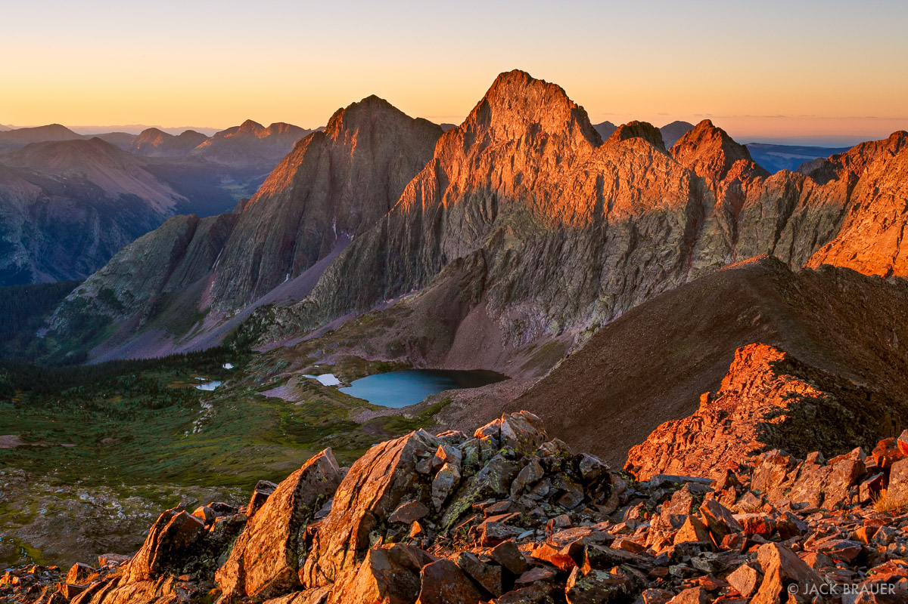
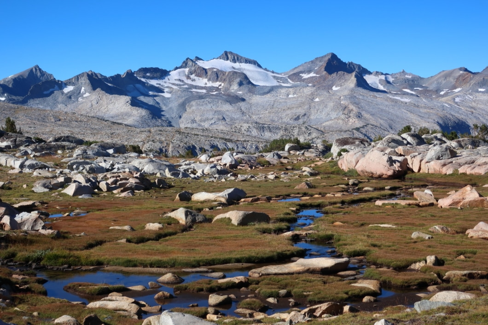

Bucket List
Writing down stuff I dream about. Most of this stuff is not feasible or practical, but I'm writing it down to inspire both myself as well as any travelers who stumble upon this page.
Please Note: no images on this page are my own, and the content on this page is not being used for profit of any kind.
Colorado

-
The Colorado Trail
"Mile for mile the most beautiful trail in America." Doing this is a pretty personal goal for me, as it was the first long-distance hiking trail that I had ever heard of, and really what got me into backpacking and hiking again. I am increasingly becoming interested in starting in Durango for a NOBO thru-hike in early September. 486 miles.
-
Sangre De Cristo Range Traverse
One of the most impressive mountain ranges I have ever seen, and I love that there is an opportunity to traverse the Great Sand Dunes instead of staying on the ridge proper. ~100 miles of difficult scrambling, this is a stretch.
-
Grenadier High Route
Stay up high in one of the most beautiful parts of the state. This is a work in progress, with one or two scouting trips planned for 2020.
The Southwest

-
Southwestern Horseshoe
This is pretty much my dream hike, linking together all of the trails I want to see and all of the places I want to visit in the Southwest in one trip. I would likely do the packrafting alternates on the Hayduke, and try to find more ways to make this as unique and memorable a journey as possible. 1782 miles across Utah, Arizona and New Mexico, linking the Hayduke Trail, Arizona Trail, and Grand Enchantment Trail.
-
Arizona Trail
"800 diverse miles across Arizona from Mexico to Utah."
-
Packraft the Escalante River
The West

-
Great Western Loop
6875 miles, this is probably something I'll never do, but it is the way to experience the west on foot. Also, at the time of writing this, only two people have ever completed it in under a year.
-
Yosemite High Route
A 125-162 mile high route through Yosemite. I want to go to Yosemite.
-
Wind River High Route
95 mile high route with 65 miles of off-trail travel in Wyoming's Wind River Range. I currently have plans to do this route in late August 2020, given that it is logistically possible in the midst of COVID-19. Considering that it is an unsupported attempt, that I have done routes like this before and that the only outside contact will be with a pre-arranged ride from a cousin, I think the odds are good.
-
Montana 12ers (The Beartooth 27)
Nate Bender is probably the most hardcore dude I've ever read about, and this route is probably the most gnarly thing possible. I really want to meet him and maybe do this one day...if the grizzlies don't get him first. The Beartooths are probably one of the wildest places in the US, and I'd love to visit someday.
Alaska

-
Hiking/Packrafting Traverse of the Brooks & Alaska Ranges
-
Alaska Mountain Wilderness Classic
International
-
Great Divide Trail
1100 kilometers through Alberta and British Columbia on the continental divide.